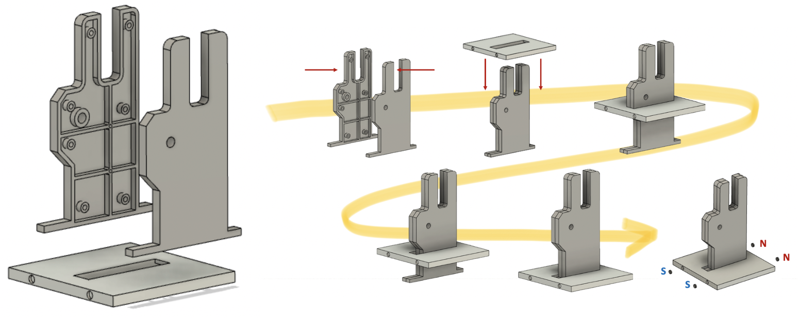

Glasses Holder Design
This was a project done in a Stanford PRL course. I designed a stackable glasses holder to hold multiple glasses taking minimal space. The glasses holder was then redesigned to be mass produced via injection molding and sand casting.
Preliminary design & Rapid prototype
Preliminary design base plate was to have cutouts that can position the two glasses holder pieces so that the design could hold two glasses side by side. Preliminary design stands were plastic pieces with two grooves to hold the glasses. The first groove will hold the nose part of glasses, the second groove the legs part. The neck on the bottom of the piece was planned to be able to be held by the base. Preliminary design assembly consisted of a connection where the bottom neck of the stand would fit into the cutouts of the base stand. This assembly method later changed into a dowel connection then to fastener connection. Through several iterations of prototyping I started to work on a single “stand” and “base” to determine the optimal length and thickness of design. For base plate, I decided to use press fit mechanism to connect the two pieces, which later lead to an idea of using dowel pins then to fasteners for later design iterations. The base plate was sized to fit one glasses stand, taking up minimal space. The finished assembly showed that the stand could support glasses in a stable manner.
CAD Model, Final & Mass Prouced
The final CAD model consists of a "base," a "stand," and purchased magnets. The base is to be made out of aluminum and the stand is to be made out of derlin. The stand and base are connected via two purchased M5 flat head screws. You can machine and assemble as many of the holders you want and simply stack them using magnetic joints. Methods of machining are detailed below.
For scaled manufacturing, the stand is injection molded with ABS thermoplastics and the base is sand casted with aluminum. The stand has uniform wall thickness of 2.5mm with 7 bosses that can be press fitted. I removed the “screw in” design for both manufacturability and cost reduction. The cross ribs will provide structural support to prevent warping. Due to the change in design, countersink holes in the base were removed and replaced with slots with steps.